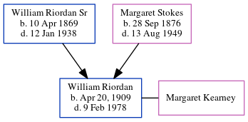

William Joseph Riordan 1909 - 1978
[ Home ] | [ Calendar ] | [ Surnames Index ] | [ Census Index ] | [ Family History ]The child of William Riordan Sr and Margaret Stokes, William Riordan, the great-uncle of Michele Copp (née Phillips), was born in Atlanta in Apr 20, 19091,2,3. He and married Margaret Kearney in Georgia, USA in Feb 18, 1933 (Fr. Phillips, Immaculate Conception Church).
During his life, he was living in Fulton1.
He died on Feb 9, 1978 in Atlanta, , Georgia1,2,3.
Parents
- William Joseph Sr was born on Apr 10, 1869
- Margaret Louise was born on Sep 28, 1876
Citations
- Georgia Deaths, 1919-98 Online publication - Provo, UT, USA: The Generations Network, Inc., 2001.Original data - State of Georgia. Indexes of Vital Records for Georgia: Deaths, 1919-1998. Gerogia, USA: Georgia Heatlh Department, Office of Vital Records, 1998.Original data: State
- OneWorldTree Online publication - Provo, UT, USA: MyFamily.com, Inc.
- Social Security Death Index Online publication - Provo, UT, USA: MyFamily.com, Inc., 2006.Original data - Social Security Administration. Social Security Death Index, Master File. Social Security Administration.Original data: Social Security Administration. Social Security Death Inde
Family Tree
Generated by ged2site. Last updated on Jun 6, 2024